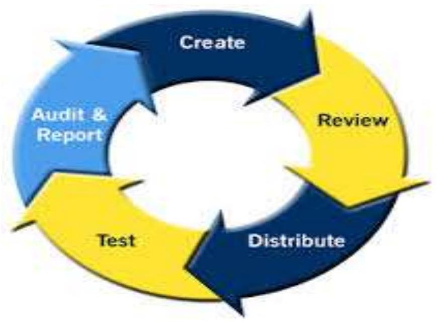

Mass Casualty Management in ER Principles
1. Policies and Procedures 2. Emergency or Disaster Plan 3. Operating Theatre 4. Staffing Requirements of the ER 5. Overcrowding 6. Equipment & Supplies of the ER 7. Contingency 8. Observation & Holding Area 9. Referral & Transfer
Policies & Procedures
• All hospital & emergency department must have clearly written & disseminated policy & procedures. • Policy must be reviewed after each major emergency or disaster scenario.

Emergency or Disaster Plan
• Emergency plan has to be well written and contain important elements such as triage criteria & the incident command system. • Important questions • Who needs to be prioritised for definitive care? • Who is in charge? • What are the functions of each & every member of the emergency team?
Operating Theatre
• Access to functioning OT allows for early definitive care and minimises unwanted morbidity or preventable mortality.
Staffing Requirements of ER
Nurses
• Nursing staff in ER must have training in triage, trauma management, disaster management. • The nursing staff must be able to
• Work with emergency medical doctors and the surgeons treating injured patients. • Ensure resuscitation equipment and drugs are available & adequate. • Help triage patients during a mass casualty incident.
Emergency Medicine Physicians
• Emergency doctors help triage & institute initial management to injured patients while surgeons deliver definitive care. • The Trauma Team • Comprises surgeons, anest hesiologist & trauma nurses. • Delivers definitive care
Overcrowding
• In developing countries, ER are lacking resources for day-to-day problem even before the occurrence of disaster. • Modern principles of emergency medicine don't exist. • After a mass casualty incident, hospital is flooded with visitors which makes the working environment chaotic and difficult which needs to be controlled.
Equipment & Supplies
• Airway devices • Oxygen tanks, nasal prongs, oropharyngeal airway devices, nasopharyngeal airway device • Intubation equipments • Management of Shock • Surgical gauge pack, roll bandages, IV cannula, crystalloids and colloid, Access to blood bank, Traction splints • Emergency Drugs • The equipments & drugs should be in bulk and readily available during mass casualty incident.
Contingency
• Planning is the key to the proper response to a mass casualty incident. • Worst case scenario must be thought through and procedures developed for each possibility.
Observation & Holding Area
• During an influx of patients to a hospital temporary patient care areas may have to be established like lobby areas & corridors.
Referral & Transfer
• When the hospital is flooded to its capacity, the process of referral & transfer to other hospitals must be considered.